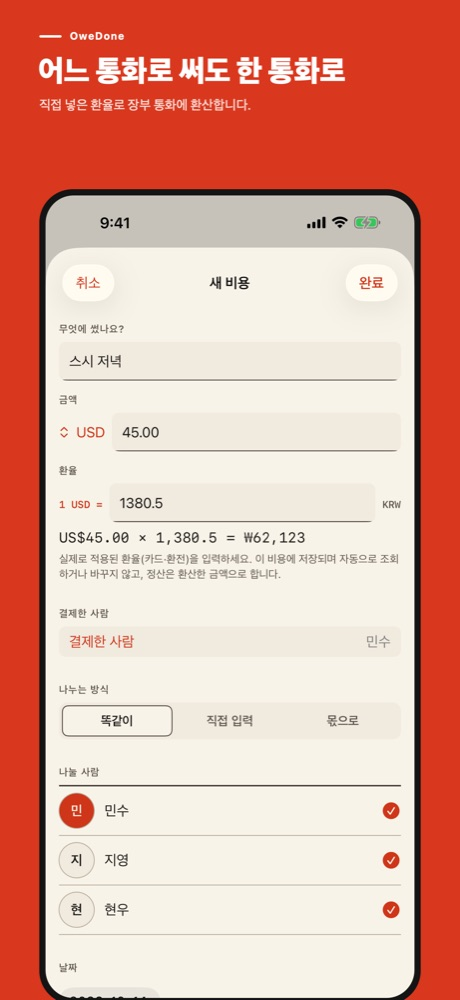
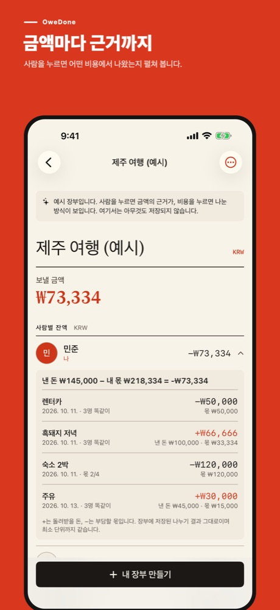
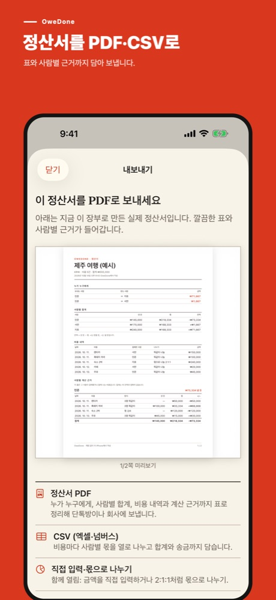

이 글은 OweDone을 만든 개발자(ongsim)가 직접 쓴 안내입니다. 화면은 1.2.0을 Simulator에서 찍은 실제 앱 화면이고, 이름과 금액은 예시입니다.
예시 / USD → KRW
스시 저녁 US$45.00, 민수 카드 환율 1,380.5원이었다면?
세 사람이 여행 중 저녁값 US$45.00을 냈고, 결제는 민수가 했습니다. 정산은 원화로 하기로 했고, 민수 카드 명세서에 찍힌 실제 환율은 1달러에 1,380.5원이었습니다.
1. 장부 통화는 하나, 비용은 낸 통화 그대로
장부를 만들 때 정산할 통화 하나(예: 원화)를 고릅니다. 비용을 추가할 때 금액 옆 통화 코드를 눌러 USD를 고르고 45.00을 적은 뒤, 환율 칸에 1380.5를 넣습니다. 화면 아래에 US$45.00 × 1,380.5 = ₩62,123처럼 환산 결과가 바로 보입니다.


2. 계산은 이렇게 됩니다.
| 단계 | 값 |
|---|---|
| 환산 | 45.00 × 1,380.5 = 62,122.5 → ₩62,123 |
| 세 사람 몫 | ₩62,123 ÷ 3 = ₩20,707, 남는 ₩2 |
| 남는 2원 | 저장된 순서대로 두 사람에게 1원씩 → ₩20,708 · ₩20,708 · ₩20,707 |
| 합계 | ₩62,123 (원래 환산액과 정확히 같음) |
반올림은 비용마다 환산할 때 한 번만 합니다. 그다음 나누기는 원 단위로 하고, 나누어떨어지지 않는 원은 저장된 순서대로 배분하므로 사람별 금액의 합이 언제나 환산액과 같습니다. 환율과 환산식은 비용과 사람별 계산 근거에 그대로 남습니다.
3. 어떤 환율을 넣어야 하나요?
실제로 적용된 환율을 넣으세요. 카드라면 명세서의 원화 청구액을 외화 금액으로 나눈 값, 환전한 현금이라면 환전 영수증의 환율입니다. OweDone은 환율을 인터넷에서 조회하지 않으며, 한 번 저장한 환율은 저절로 바뀌지 않습니다. 그래서 여행이 끝난 뒤 다시 열어도 정산 금액이 달라지지 않습니다.
무엇이 무료이고 무엇이 유료인가요?
장부 만들기, 똑같이 나누기, 잔액·정산 순서, 사람별 계산 근거 펼쳐 보기, 정산 요약 텍스트 공유, 장부 통화 하나로 쓰기는 무료입니다. 비용 화면에서 외화 금액과 환율을 넣어 환산 결과를 확인하는 것도 그대로 해 볼 수 있습니다. 두 번째 통화로 비용을 저장하기, 정산서 PDF·CSV 내보내기, 몫·직접 입력 나누기는 한 번 구입하는 평생 이용권으로 열리며, 구독이나 광고는 없습니다. 이미 저장한 비용은 이용권과 상관없이 언제나 보고 고치고 지울 수 있습니다.

OweDone은 정산 금액을 계산할 뿐, 송금하거나 은행 계좌에 연결하지 않습니다. 장부는 이 iPhone에 저장되며 계정이 필요 없습니다.
한국 App Store에서 OweDone 보기 · 숙소비를 2:1:1 몫으로 나누는 예시 · 설치 전 웹 계산 시연